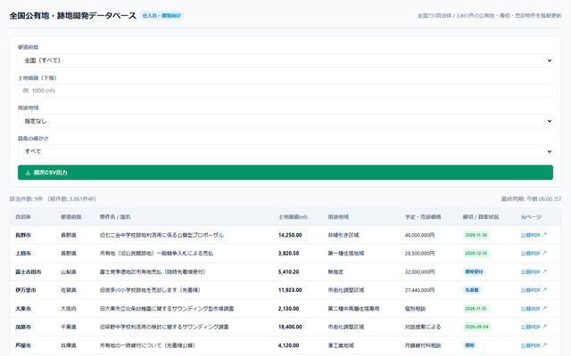
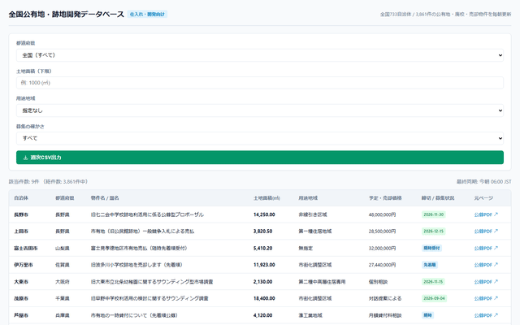
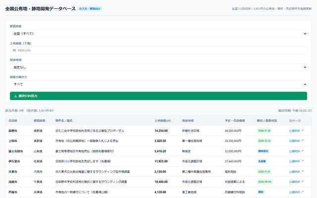

最新のグラフ組み込み解説動画、海外向け英語動画、実機操作動画、メール用GIFアニメを一括再生・確認できます。
1. 朝、条件に合う新着がメール/Slackに届く → 2. 開くとエリア・面積・種別で整理されている → 3. 自治体公式ページ・PDFへ直接移動できる、実際の利用場面を中心とした最新解説動画です。
海外投資ファンド・開発企業向け。1. Daily Alerts → 2. Criteria Screening → 3. Direct Municipal Tender PDFs の実用フローを英語ナレーションで解説。
全国1,961自治体中1,883サイトの毎日巡回実績（円グラフ）と、足切り短縮の構造（棒グラフ）を提示した客観的実証解説動画。
長野県 / 5,000㎡以上 / 用途非線引の条件で旧七二会中学校跡地（14,250㎡）を一瞬で抽出し、CSV出力する実演。
全国 / 10,000㎡以上 / 随時売却（即購入可能・先着順）の平坦公有地を一瞬で抽出する実演。
全国 / 5,000㎡以上 / 準工業地域の産業用地・幹線道路沿い物件を一瞬で抽出しCSV出力する実演。

メール本文に直接貼ることで、受信者がメールを開いた瞬間に操作が目に飛び込んできます。

1万㎡超の随時売却物件を絞り込む様子がループ再生されます。

準工業地域の産業用地を抽出する様子がループ再生されます。